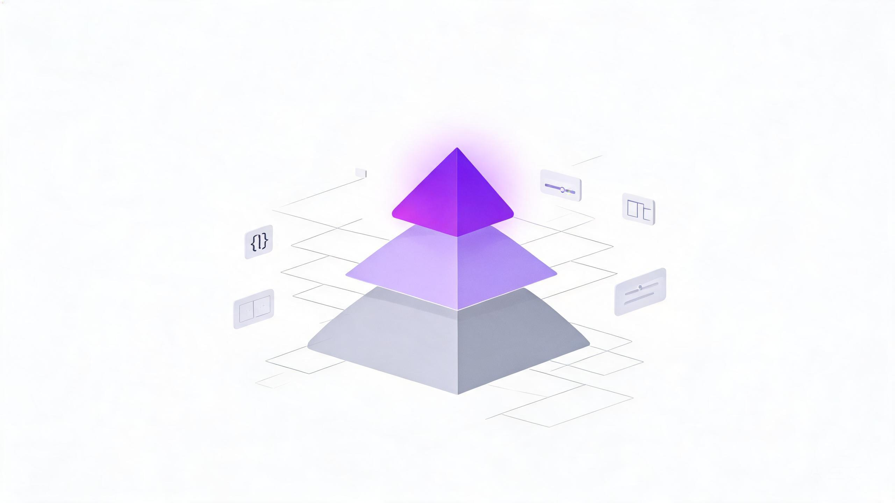

委托给 AI / 文档
- 组件库的 props 表与用法示例
- CSS 属性值、兼容性查询（caniuse 型问题）
- API / 函数签名、参数顺序
- 构建配置写法（vite.config、webpack、tsconfig 细项）
- 正则表达式与日期格式化这类「写完就忘」的代码
- 第三方库的接入步骤与样板代码
- 命令行参数、部署平台配置项
从全网主流前端学习体系中抽取「原理、架构与判断」层，融合为一份以架构师视角组织的学习地图——顶层必须内化，底层果断委托给 AI。
顶层无法外包。AI 能生成十种方案，但选哪种、验得对不对、有没有安全洞——判断的人是你。判断力的上限 = 你金字塔顶层的密度。
地图决定提问质量。不知道 BFC 存在的人，永远问不出「这个 margin 塌陷是不是 BFC 问题」。你向 AI 提问的质量，取决于你的词汇量。
细节就该委托。组件 props、CSS 属性值、配置写法——AI 比你记得准，且错误不致命。把这些时间还给顶层。

为什么不直接抄一份现成路线图？因为几乎所有主流体系都是「为没有 AI 的时代」设计的——它们默认你要记住一切。本报告的抽取逻辑恰恰相反：先问「这条知识在 AI 时代是否仍然稀缺」，再决定它进金字塔的哪一层。
这个分层不是凭空的。中文社区 2026 年的讨论已经形成共识：AI 编码工具从「代码补全」进化为「理解项目上下文、完成多步任务」的 Agent，约 84% 的 Web 开发者已日常使用 AI 编码工具[14]；前端工程师的能力重心正从「写代码」转向判断代码——判断 AI 产出的安全漏洞、性能隐患与规范问题[15]。换句话说：整个行业的金字塔都在向顶层压缩，谁先完成抽取，谁就占住判断位。
没有单一体系能覆盖金字塔全层：国际体系胜在标准与深度，中文体系胜在原理深挖与岗位视角，专题研究补齐架构决策框架。融合的原则是——每个来源只取它最强的一层。
| 来源体系 | 定位 | 抽取层 | 对金字塔的贡献 |
|---|---|---|---|
| roadmap.sh Frontend Roadmap[1] | 交互式技能路线图 | L2 地图 | 全景分类学：从语言、框架、构建到部署、性能的完整技能拓扑，适合查漏补缺 |
| MDN Curriculum[2] | Mozilla 官方课程 | L2+L3 地基 | 权威模块划分：Web 标准、语义化、无障碍、Design for Developers、性能、安全 |
| web.dev Learn[3] | Google 官方课程 | L3 性能 | Core Web Vitals 指标体系与性能/无障碍/设计专项深度 |
| patterns.dev[4] | 模式库 | L3 模式 | 渲染/性能/JS 模式语言：PRPL、Streaming SSR、Islands、RSC、Bundle Splitting |
| Josh Comeau 课程[5][6] | 心智模型型课程 | L3 方法论 | 「Rendering Logic 而非属性记忆」的教学范式——本报告域卡片的组织方式即源于此 |
| Frontend Masters 职业路径[7] | 高级工程师路径 | L3 工程深度 | Deep JS / Vanilla JS / Web Performance / Testing 的高级序列，验证了「先深后广」 |
| Total TypeScript[8] | TS 专项训练 | L3 类型 | 类型设计（Designing Your Types）、泛型建模、高级模式 |
| The Odin Project[9] | 项目式全栈路径 | L1-L2 实践 | Learn / Build / Connect 三段式项目训练法 |
| 前端面经 Top100（掘金）[10] | 中文面试体系 | L2 索引 + L3 原理 | 九大分类学（网络浏览器/JS核心/CSS/框架/工程化/性能/安全/算法/表达）+ 事件循环、Fiber、响应式等原理深挖点 |
| 框架原理对比深度文[11][12] | 中文源码级文章 | L3 哲学 | 框架设计哲学：编译时 vs 运行时、推 vs 拉、微任务调度 vs 时间切片 |
| 前端架构师能力模型[13] | 中文岗位视角 | L3 角色 | 架构师六维：技术选型 / 工程化体系 / 性能体验 / 跨端与微前端 / AI 协作 / 业务理解 |
| AI 时代趋势讨论[14][15] | 中文趋势文 | L3 元认知 | 「从写代码到判断代码」、AI 原生前端（流式渲染 LLM 响应等）成为新增能力 |
| 7 大架构专题研究[16]-[23] | 专题深挖 | L3 主体 | 渲染策略谱系、状态分类学、Token 三层、Vitals 决策树、渲染管线、工程规模、安全边界——第四章八大域的直接骨架 |
融合结论：顶层以「7 大专题研究 + patterns.dev 模式语言 + Josh Comeau 心智模型法」为骨架，用中文体系补原理深度与岗位视角；中层以「roadmap.sh + 面经九大分类」做全景地图；底层明确写进委托清单。MDN 与 Frontend Masters 验证地基的标准划分，但不照搬其「全记」路线。
三层不是「难度分层」，而是「可外包程度」分层：越往上，越无法交给 AI；越往下，越应该交给 AI。
| 层级 | 知识性质 | 学习方式 | 遗忘代价 |
|---|---|---|---|
| L3 判断层 | 心智模型、架构权衡、决策规则、验收能力 | 刻意内化：白板复述 + 项目实战 + 教授他人 | 极高——直接决定选型与质量上限 |
| L2 地图层 | 概念词汇、分类学、症状与定位的映射 | 反复浏览 + 遇到坑时回填 | 中——忘了词汇就问不出好问题 |
| L1 查询层 | API 签名、属性值、配置写法、库用法 | 不学，委托 AI 与文档 | ≈0——随时可查且 AI 比你准 |
校招特例提醒：面试是裸考。高频手写题（防抖节流、深拷贝、Promise.all、事件循环输出题）会在考试场景下从 L1 临时「升级」为 L3——备考期需要针对性硬背，这是分层的唯一例外。
这是全报告的主体。每个域按固定结构抽取：心智模型（一句话装进脑子）、架构师决策（什么时候选什么）、术语武器库（提问的词汇）、AI 边界（哪些能外包、哪些不能）、融合来源。八个域合起来，就是前端架构师的判断力底座。
浏览器把代码变成像素，走的是一条多阶段流水线：解析 → DOM/CSSOM → 渲染树 → 布局 → 绘制 → 合成，而主线程是这条流水线上的独木桥——JS 执行、样式计算、布局都在它上面排队[18]。所有前端性能问题的第一性原理都在这条流水线上。
transform / opacity——跳过布局与绘制，直接在合成层（GPU）完成；动 layout 属性 = 每帧重排。AI 能写出规范的 transform 动画，但它看不到你屏幕上的 Performance 面板。「这段代码为什么掉帧」的定位，需要你理解流水线才能把现场翻译给它。
融合来源：MDN 浏览器工作原理[18] · Josh Comeau Rendering Logic[5] · 中文面经浏览器原理章[10]
JS 的一切异步行为都是事件循环的调度问题（同步 → 微任务 → 下一轮宏任务）；TS 的类型系统是运行时契约的静态证明——类型设计就是 API 设计。
any 是要偿还的债务——大型代码库的公共类型层是架构问题[8]。AI 写类型注解很快，但公共类型层怎么设计、边界画在哪，是你的架构判断——它决定了后续所有人（包括 AI）生成代码的约束强度。
融合来源：Frontend Masters Deep JS / The Hard Parts[7] · Total TypeScript[8] · 中文面经 JS 核心章[10]
Server State 与 Client State 是两类完全不同的问题，用同一套全局状态库管理它们是架构错误；先分类，再选型[16]。页面架构 = 状态设计：UI 是状态的投影。
| 状态类型 | 典型例子 | 性质 | 归属方案 |
|---|---|---|---|
| Server State | 用户资料、订单列表、仪表盘指标 | 异步、可缓存、会过期（stale） | TanStack Query / SWR 类查询库 |
| Client State | 模态框开关、选中 tab、悬停态 | 同步、本地、瞬态 | useState / Zustand |
| URL State | 过滤器、分页、搜索词 | 可分享、可导航、可回退 | 路由参数（天然全局） |
| Global State | 主题、认证态、feature flag | 应用级、低频变更 | Context / 轻量全局 store |
| Form State | 表单输入、校验状态 | 高频更新、局部生命周期 | 表单库 + 本地 state |
AI 的默认倾向是把所有数据塞进 useState / useEffect——识别并纠正这个反模式，靠的是你脑子里的分类学。这是全栈岗最高频的代码评审场景之一。
融合来源：TanStack Query 官方指南[16] · The Joy of React 状态模块[6] · 状态管理架构文[17]
渲染模式选择 = 初始渲染成本 × 交互延迟 × 数据新鲜度 × 运维复杂度的四维权衡[17]；整个框架演进史（SSR → ISR → Streaming → Islands → Resumability），就是不断把客户端执行负担「转移或延迟」的历史[4]。
flowchart LR CSR["CSR 客户端渲染
交互最流畅 / 首屏与 SEO 最弱"] -->|"业务要求 SEO·首屏"| SSR["SSR 服务端渲染
SEO 佳 / 服务器成本与 TTFB"] SSR -->|"内容可静态化"| SSG["SSG 静态生成
CDN 极速 / 数据构建时定格"] SSG -->|"要数据新鲜度"| ISR["ISR 增量静态再生
静态速度 + 近实时"] SSR -->|"TTFB 过高"| ST["Streaming SSR
流式渐进输出 HTML"] SSR -->|"多数静态 + 少量交互"| IS["Islands 岛屿架构
交互区域独立加载执行"] IS -->|"连水合也想省"| RQ["Resumability
状态序列化 · 免水合"]
| 业务场景 | 推荐策略 | 决策理由 |
|---|---|---|
| 重交互 SaaS（后台、编辑器） | CSR | 登录后才用，无 SEO 需求；SSR 无增益还添服务器成本 |
| 内容 + SEO（营销页、博客、文档） | SSG / Islands | CDN 分发极速；交互岛按需加载，静态部分零 JS |
| 个性化数据 + SEO（电商详情页） | SSR / Streaming SSR | 每请求动态内容，流式输出压 TTFB |
| 频繁更新内容（资讯、榜单） | ISR | 静态的加载速度 + 定时/按需再生的新鲜度 |
AI 熟悉每一种框架的写法，但「这个业务该用哪种渲染策略」是业务判断——答案不在代码里，在你的四维权衡里。这是架构师面试与实战的核心问题。
融合来源：patterns.dev 渲染模式[4] · 渲染策略对比[17]
设计系统的本质是设计决策的边界与继承链：Token 三层（primitive → semantic → component）是一次次抽象，抽象落在哪一层，决定了主题化与多品牌的能力边界[19]。
<Select><Option/></Select> 优于一个二十个 prop 的巨型 Select。AI 能生成漂亮的一次性组件，但组件 API 的契约设计（props 怎么命名、扩展点留哪、谁管状态）是设计判断——它决定组件库三年后还能不能用。
融合来源：Design Systems for Scalable Products[19] · MDN Design for Developers[2]
性能不是「优化某个指标」，而是瓶颈定位学：LCP 看加载、INP 看交互、CLS 看稳定；排查顺序 TTFB → LCP → INP 反映「加载 → 响应 → 稳定」的优先级[20]。
| 指标 | 测量什么 | 阈值 | 主要优化方向 |
|---|---|---|---|
| LCP 最大内容绘制 | 视口内最大元素完成渲染 | ≤ 2.5s | 预加载主图、SSR、关键 CSS、图源压缩 |
| INP 交互到下一帧 | 用户交互到下一帧绘制（2024 起取代 FID） | ≤ 200ms | 拆长任务、让出主线程、精简事件处理 |
| CLS 累积布局偏移 | 页面视觉稳定性 | ≤ 0.1 | 媒体预留尺寸、字体策略、避免动态插入 |
AI 生成的代码默认不心疼 bundle 体积——顺手引入整个图标库、重复工具函数。预算的制定与守住（CI 卡口）是你的职责，这是「AI 加速 + 人类把关」最典型的分工。
融合来源：Core Web Vitals 深度指南[20] · web.dev Learn Performance[3]
Monorepo / 模块化单体 / 微前端是三个不同维度的问题——源码管理、代码组织、运行时边界——不能混为一谈；多数团队显著高估了自己对微前端的需求[21]。
AI 在单文件内很强，但跨包的架构约束需要你定义并写进 Rules / CI——边界规则恰好是喂给 AI 的最佳上下文：你定义边界，AI 在边界内高速生成。
融合来源：Monoliths, Microfrontends and Monorepos[21] · Feature-Sliced Design[22]
前端安全的本质是信任边界管理：浏览器执行的是不可信输入（用户内容、第三方脚本、npm 依赖），所以要在输出层转义、在资源加载层白名单、在依赖层管控[23]。
dangerouslySetInnerHTML / v-html 出现的地方必须 sanitize。AI 可能顺手生成含 XSS 隐患的代码（尤其处理富文本时）——安全审查是 AI 时代工程师不可让渡的责任，也是「判断代码」最直接的体现[14]。
融合来源：Frontend Security[23] · OWASP Web Application Security[24]
这一层不要求深度，要求「知道存在 + 能描述症状」。它由 roadmap.sh 的全景拓扑[1]与中文面经的九大分类[10]融合而来，每类附「该向 AI 提的典型问题」——这就是地图层的用法：把你遇到的症状，翻译成地图上的坐标。
| 分类 | 要点词汇（知道存在即可） | 典型「翻译给 AI」的问题 |
|---|---|---|
| 语言与标记 | HTML 语义化 · flex / grid 选型 · 定位与层叠上下文 · BFC · 响应式方案 · 动画 | 「这个 z-index 为什么不生效？」「为什么 margin 会塌陷？」 |
| 浏览器与网络 | cookie / localStorage · 强缓存 / 协商缓存 · CORS 与预检 OPTIONS · HTTP 1.1/2/3 · 多进程架构 | 「为什么接口跨域了？」「为什么改了代码用户看不到更新？」 |
| 框架生态 | React / Vue / Svelte 横向关系 · 元框架 Next / Nuxt · 状态库生态 · RSC · 响应式 vs 虚拟 DOM | 「这两个框架的设计哲学差异对选型意味着什么？」 |
| 工程工具 | Vite / Webpack · ESLint / Prettier · 包管理与 semver · lockfile · 环境变量 · dev proxy | 「这个『模块找不到』报错是 ESM/CJS 冲突吗？」 |
| 测试体系 | 单元 / 集成 / E2E / 组件测试 · Testing Library 理念（测行为不测实现） | 「这个组件的测试该断言什么？」 |
| 专项领域 | 无障碍（a11y）· PWA · Web Components · 跨端 · GraphQL · 国际化 · 前端监控 | 「这个交互的无障碍属性该怎么补？」 |
用法提醒：地图层的正确打开方式不是「通读背诵」，而是每次踩坑后回填——把新词汇钉进对应分类。三个月后，你的提问质量会明显不同。
列出这一层的意义在于「给出许可」——以下内容刻意不背，不是偷懒，而是把认知资源向顶层集中。
一句话：L1 的「不背」是建立在 L3 的「必懂」之上的——没有顶层的判断力，委托就变成依赖。
八大原理域对不同角色的权重并不相同。下面用雷达图给出三种角色画像（5 分制），再给出针对你（后端出身 + AI 全栈岗）的最短路径。
| 角色 | 主场域 | 一句话定义 | 对口 JD 关键词 |
|---|---|---|---|
| 架构师 | 状态架构 · 渲染策略 · 工程规模 | 定义边界与决策：状态怎么分、渲染怎么选、包怎么拆、契约怎么定 | 技术方案讨论 · 架构优化 · 代码评审 |
| 工程师 | 渲染管线 · 语言运行时 · 性能 · 安全 | 守住质量与实现：卡顿定位、类型架构、预算卡口、安全审查 | 业务全链路开发 · AI 产出的验收者 |
| 设计师（前端侧） | 设计系统 · 无障碍 | 设计到代码的契约：Token 三层、组件 API、可访问性内建 | 页面布局与交互开发 · 交互解决方案 |
| 阶段 | 目标 | 具体动作 |
|---|---|---|
| 第 1 个月 | 八大域心智模型入脑 | 每个域做一次「白板讲解」练习（对着空白文档复述心智模型 + 决策规则）；同步恢复裸考基本功（算法 + 前端手写题） |
| 第 2 个月 | 一个端到端项目 | 走完「需求 spec → 契约（OpenAPI + 共享类型）→ 前端 → 部署（缓存策略 + SPA 回退 + RUM）」，每一段对照对应域验收 |
| 第 3 个月 | L3 判断工程化 | 把项目的边界规则、组件 API 约定、性能预算沉淀为个人 Rules / Skills 体系，并写一个 MCP server（后端优势直接复用） |
最后回到那句话：你要做的是架构师、工程师、设计师，不是记忆工具。这份金字塔的顶层八域，就是你与「只会 vibe coding 的人」之间的护城河——AI 越强，顶层越贵。